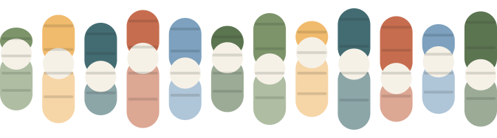
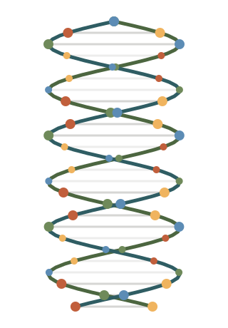

Drop in a FASTA or FASTQ file. GC content, codons, reading frames, proteins and promoter motifs. Deterministic math, no upload.
Drag a file here, or click to browse.
Supported formats: .fa, .fasta, .fastq, .txtEach result is a documented calculation on your sequence.
The share of G and C bases.
A, T, G, C and N counts, with a live bar.
Every triplet mapped to its amino acid.
ATG to stop runs on both strands.
Candidate proteins, longest first.
TATA, BRE, INR and DPE matches.

No model, no randomness. A faithful port of the tested DNAnalyzer Java core: same sequence, same result.
Read the source
FileReader and analyzed here, never sent to a server.Drop a FASTA or FASTQ file above. No account. Free.